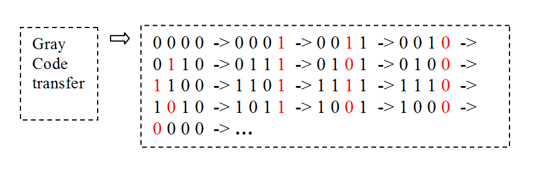
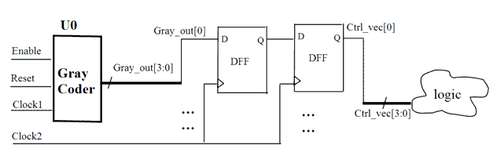

| Description | This rule fires when Leda detects a multibit control signal that is not gray coded crossing a clock domain. Gray code gets only one bit changed every time, so it is easy to tell if the gray code status or data has changed for some critical timing edge. |
| Policy | DESIGN |
| Ruleset | CLOCKS |
| Language | VHDL/Verilog |
| Type | Hardware |
| Severity | Note |
This is an example of valid Verilog code, followed by a circuit diagram that illustrates the correct coding style:
module ntl_clk24_top (Clock1,Clock2, Reset, Enable, Ctrl_vec); input Clock1, Clock2, Reset, Enable; //Enable - start Gray counter output[3:0] Ctrl_vec ; reg [3:0] Ctrl_vec; //Control vector signals reg [3:0] Gray_out; //Gray counter reg [3:0] Ctrl_temp; Sub_Gray U0(.Clock(Clock1), .Reset(Reset), .Enable(Enable), .Gray_out(Gray_out)): always @(posedge Clock2) Ctrl_temp <= Gray_out; always @(posedge Clock2) //clock twice for crossing clock domain Ctrl_vec <= Ctrl_temp; //Ctrl_vec[3:0] is used for control signals ... endmodule module Sub_Gray(Clock, Reset, Enable, Gray_out); input Clock, Reset, Enable; output[3:0] Gray_out; //Gray_out[3] Gray_out[2] Gray_out[1] Gray_out[0] endmodule
